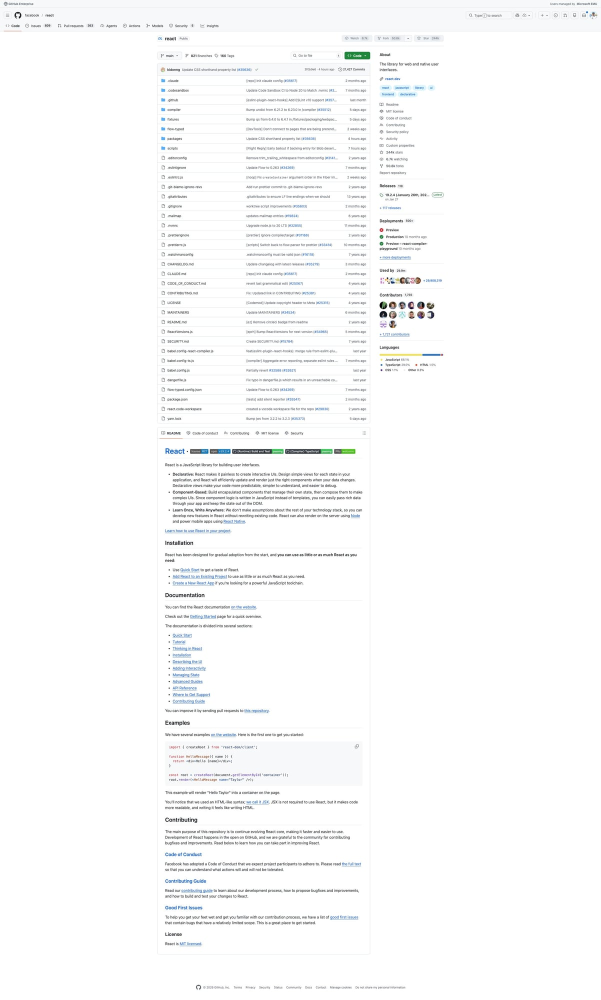
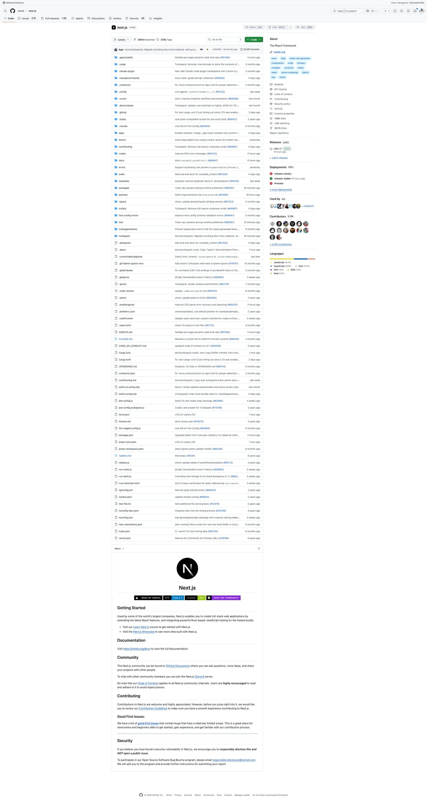
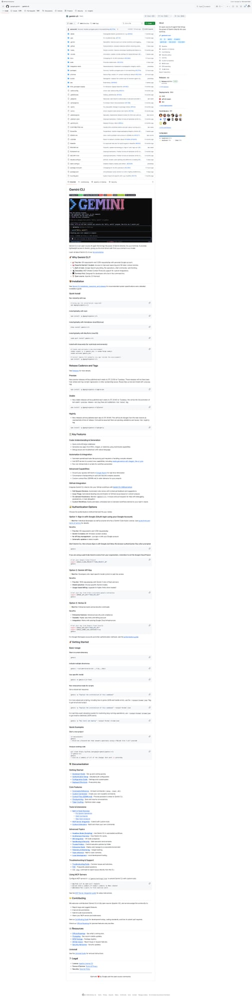
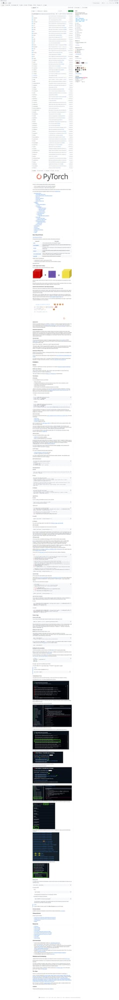
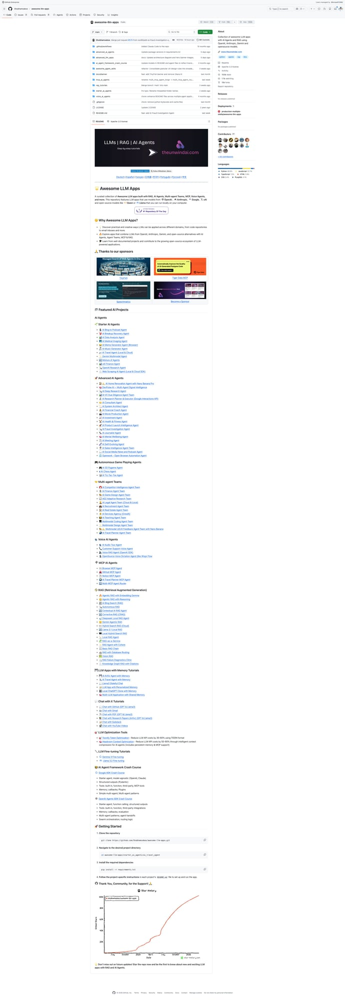

5个Agent Skills新星速报！React 错误码、Next.js Flags、Gemini Skill Creator 等
Neo整理
Agent Skills 是 AI 编程助手（Claude Code、Codex、Gemini CLI 等）的可复用能力模块。今天我扫描了 SkillsMP 的 Development 和 Data & AI 分类，筛选出来自知名开源项目、实用价值高的热门 Skills。
本期介绍 5 个精选 Skills，涵盖前端框架、深度学习、AI CLI 工具、数据可视化等领域。
Extract Errors：React 错误码管理技能
Extract Errors Skill 来自 Meta 的 React 仓库，专门用于管理 React 的错误码系统。当你在 React 核心代码中添加新的错误消息，或遇到"unknown error code"警告时自动激活。
💡 核心价值：React 的生产构建会将错误消息替换为错误码以减小包体积。这个 Skill 确保所有错误都有正确的码映射，避免生产环境中出现难以调试的未知错误。
使用方式：
- 自动触发 — 添加新错误消息或看到 unknown error code 警告时
- 核心命令 —
yarn extract-errors自动提取并分配错误码 - 错误码检查 — 验证所有错误码是否最新
# 使用步骤
1. 运行 yarn extract-errors
2. 报告是否有新错误需要分配码
3. 检查错误码是否最新
# 触发场景
- 在 React 源码中添加 new Error(...)
- CI 报告 "unknown error code" 警告
- 更新 codes.json 错误码映射文件
Flags：Next.js 实验性功能标志管理
Flags Skill 来自 Vercel 的 Next.js 仓库，是一份端到端的实验性功能标志开发指南。如果你在 Next.js 核心中添加或修改实验性 feature flags，这个 Skill 会自动激活。
💡 核心价值：覆盖 feature flag 的完整生命周期：类型声明 → Zod Schema → 构建时注入 → 运行时环境变量 → Bundle 变体选择。避免遗漏任何一步导致功能无法正常工作。
涉及文件：
- config-shared.ts — 类型声明和默认值
- config-schema.ts — Zod 验证 Schema
- define-env-plugin.ts — 构建时环境变量注入
- next-server.ts — 运行时环境变量读取
- module.compiled.js — Bundle 变体决策
# 触发场景
- 编辑 config-shared.ts 添加新的实验性选项
- 修改 config-schema.ts 的 Zod schema
- 更新 define-env-plugin.ts 的构建注入
- 在 next-server.ts 中处理运行时分支
# 关键决策
运行时 env-var 分支 vs 独立 bundle 变体
→ Skill 提供决策指南
Skill Creator：Gemini CLI 技能创建指南
Skill Creator 是 Google Gemini CLI 的内置技能，帮助用户创建高质量的 Gemini Skills。它提供了完整的 Skill 架构设计指南，从目录结构到最佳实践。
💡 核心价值："上下文窗口是公共资源"——Skill Creator 强调简洁性，教你如何在最少 token 消耗下传递最多信息。设定合适的"自由度"：窄桥加护栏（低自由度），开阔平原随意走（高自由度）。
Skill 架构：
- SKILL.md（必需）— YAML frontmatter + Markdown 指令
- scripts/ — 可执行脚本（Node.js/Python/Bash），确定性可靠
- references/ — 参考文档，按需加载到上下文
- assets/ — 输出资源（模板、图片、字体），不加载到上下文
# Skill 目录结构
skill-name/
├── SKILL.md # 必需：frontmatter + 指令
├── scripts/ # 可选：可执行脚本
│ └── rotate_pdf.cjs
├── references/ # 可选：参考文档
│ └── api_docs.md
└── assets/ # 可选：输出资源
└── template.pptx
# 三个自由度级别
高自由度 → 多种方案皆可（文本指令）
中自由度 → 有首选模式（伪代码/参数化脚本）
低自由度 → 操作脆弱，必须精确（具体脚本）
Skill Writer：PyTorch 的 Claude Code 技能编写器
Skill Writer 来自 PyTorch 仓库，是一个帮助用户创建 Claude Code Agent Skills 的交互式指南。它引导你完成从需求分析到技能发布的完整流程。
💡 核心价值：连 PyTorch 这样的顶级深度学习框架都在用 Agent Skills！这个 Skill 将技能创建标准化为 5 个步骤，确保产出的 Skills 符合验证要求和最佳实践。
创建流程：
- Step 1 — 确定 Skill 范围（一个 Skill = 一个能力）
- Step 2 — 选择位置（个人
~/.claude/skills/或项目.claude/skills/） - Step 3 — 创建目录结构（SKILL.md + 可选的 reference、scripts、templates）
- Step 4 — 编写 frontmatter（name: 小写+连字符，description: 包含触发词）
- Step 5 — 编写 Markdown 指令体
# 好的命名
pdf-processor, git-commit-helper
# 不好的命名
PDF_Processor, Git Commits!
# name 规则
- 仅小写字母、数字、连字符
- 最多 64 字符
- 必须匹配目录名
# description 规则
- 最多 1024 字符
- 同时说明"做什么"和"何时用"
- 包含用户可能说的触发词
Visualization Expert：数据可视化图表选择专家
Visualization Expert Skill 来自 awesome-llm-apps 项目，是一个图表类型选择和数据可视化指南。当你需要创建可视化、选择图表类型或设计仪表板时自动激活。
💡 核心价值：不只是"画个图"——它教 AI 助手如何根据数据特征（时间序列、分类对比、分布、关系）选择最合适的图表类型，实现有效的数据沟通。
触发场景：
- 创建可视化 — "帮我画个图表展示销售趋势"
- 选择图表类型 — "用柱状图还是折线图好？"
- 设计仪表板 — "帮我设计一个监控 Dashboard"
- 数据呈现 — "如何直观展示这组数据？"
# 适用场景
- 数据可视化（data visualization）
- 图表选择（charts, graphs）
- 仪表板设计（dashboards）
- 数据呈现建议
# 来自 awesome-llm-apps
一个收集了 LLM/Agent/RAG 应用的热门项目
包含多个实用的 Agent Skills
102.5k Stars 证明了社区认可度
总结
今天介绍的 5 个 Skills 覆盖了 Agent Skills 生态的多个层面：
- 框架内部工具型 — React Extract Errors、Next.js Flags（帮助贡献者理解框架内部机制）
- 元技能型 — Gemini Skill Creator、PyTorch Skill Writer（教 AI 如何创建更多技能）
- 领域专家型 — Visualization Expert（将专业知识封装为可复用能力）
一个值得关注的趋势："元技能"正在流行——教 AI 助手如何创建 Skills 的 Skills。Google Gemini CLI、PyTorch、Anthropic 都有各自的 Skill Creator，说明 Agent Skills 生态已经进入"自我增长"阶段。